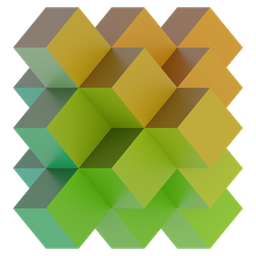

VoxelartCraft
Convert any Image to a 3D Minecraft schematic!
Image Preprocessing
|
Resolution:
Image Resolution
The size of the Image. Use a smaller resolution for faster conversion,
and a larger one for more quality on a final product.
|
||
|---|---|---|
|
Brightness:
Brightness
How white the image is.
|
||
| Highlights:
Highlights
Controls the bright regions of the image. Positive values makes them
brighter, negative values make them darker.
|
||
| Shadows:
Shadows
Controls the dark regions of the image. Positive values makes them
brighter, negative values make them darker.
|
||
| Contrast:
Contrast
Controls the difference between bright and dark parts of the image.
Positive values add contrast (more black and white), negative values remove contrast (more
gray).
|
||
| Saturation:
Saturation
Controls the intensity of color. Positive values makes colors stronger,
negative values reduces colors. Negative -100 creates a grayscale image. Consider using a
grayscale pallette with this as well.
|
||
| Temperature:
Temperature
How yellow or blue the image is.
|
||
| Tint:
Tint
Adds or removes green color.
|
3D Settings
|
FOV:
Field of View
The viewing angle between the top and the bottom of the image. (Doesn't
always translate 1:1 to minecraft fov)
|
||
|---|---|---|
|
Yaw:
Yaw
The sideways rotation of the camera. (-180, -90, 0, 90, 180) is (N E S W
N)
|
||
|
Pitch:
Pitch
The vertical rotation of the camera. (-90, 0, 90) is (Up, Horizontal,
Down)
|
||
|
Min Depth:
Minimum Depth
The starting distance where blocks are placed.
|
||
|
Max Depth:
Maximum Depth
The final distance until where blocks are placed.
|
||
|
Variance:
Variance
The allowed variance in the image where a block is placed. Higher values
lead to cheaper builds, but poorer quality. Lower values lead to more expensive builds with
better detail.
|